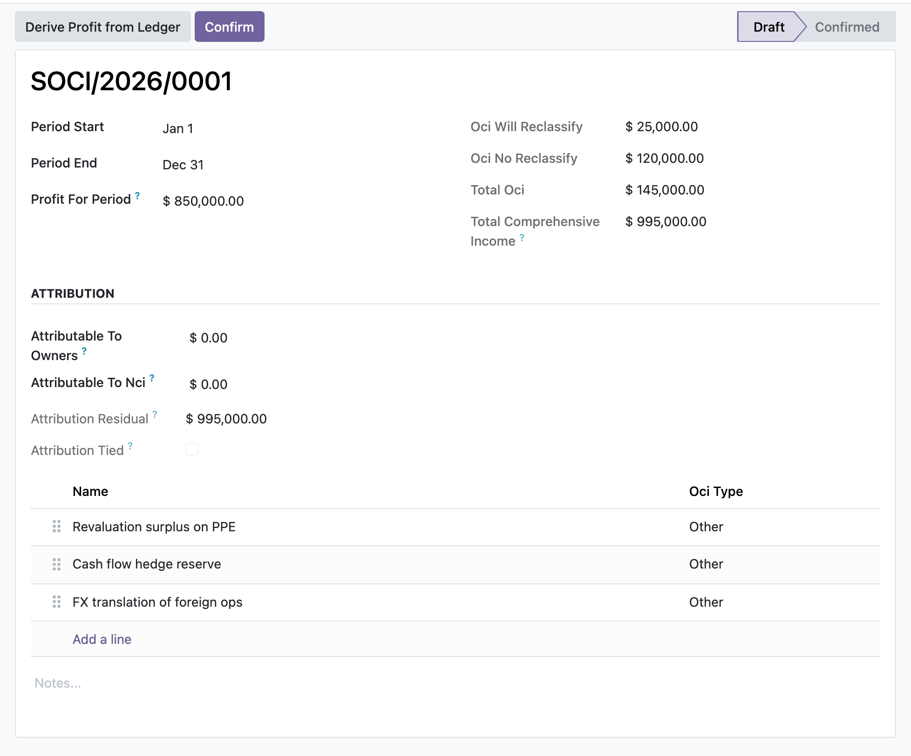

Prepare a statement of changes in equity and a statement of comprehensive income that reconcile, component by component, to your posted general ledger and lock once signed off.
Derive opening equity, per-component opening balances and profit for the period straight from posted journal items, then read the closing tie-out that shows whether the worksheet actually agrees with the general ledger at period end.
The equity statement rolls each component from opening to closing across profit, OCI, dividends, share issues and other movements; the comprehensive income statement groups OCI by whether it may be reclassified to profit or loss and attributes total comprehensive income to owners and non-controlling interests.
Once an EH Accounting Manager confirms a statement its figures and lines are frozen, so a raw write, a new line or a deletion cannot silently move the totals. Reopening to edit is a manager-gated action that unlocks the figures again.
At period end you create a statement of changes in equity, map each component line to its ledger equity accounts and derive the opening balances so every component gets exactly its own accounts and any unallocated residual lands on retained earnings. You enter the period movements, profit, OCI, dividends and share issues, and the closing tie-out tells you at a glance whether the worksheet agrees with posted equity at period end. On the comprehensive income side you derive profit for the period from the posted P and L, add the OCI components split by reclassification, and enter the owners and NCI split. When you confirm, the manager gate checks that profit ties to the ledger and that attribution reconciles before the statement locks. Finally a cross-statement tie-out control confirms that ledger profit, the SoCI, the SoCE and the balance sheet earnings movement all agree for the period, and freezes that result as a point-in-time snapshot.
In the shipped code today, each one a place where a cheaper module silently does the wrong thing.
Ledger derivation returns zero both for a genuine nil balance and for the total absence of postings, so the module separately probes whether any posted equity or P and L item exists and marks the tie-out advisory only when no figure is really derivable, instead of fake-tying to zero.
When components are mapped to ledger accounts, opening equity on accounts no line claims (for example current-year earnings not yet allocated) is assigned to the retained-earnings fallback line so the worksheet total opening still equals the ledger figure.
Confirmation blocks on a failed tie-out only where a real ledger figure exists: profit must tie and, if any owners or NCI amount is entered, attribution must reconcile; on an empty-ledger company these stay advisory chatter warnings, never a hard stop.
Adding a line to a confirmed statement would recompute and move the parent totals, so create on child lines is blocked when the parent is confirmed, closing the gap that a write-only freeze would leave open.
The cross-statement tie-out marks a pair not applicable when no source statement exists for the period, recording in a source note exactly which statements were found so a missing optional statement never blocks and never silently passes as a real tie.
odoo 19 statement of changes in equity, IAS 1 primary statements odoo, statement of comprehensive income odoo, other comprehensive income OCI odoo, total comprehensive income, equity reconciliation odoo, SOCE SOCI odoo community, owners and non-controlling interests attribution, OCI reclassification to profit or loss, opening to closing equity roll-forward, general ledger tie-out statement, cross-statement tie-out control

Statement of comprehensive incomeThe IAS 1 statement of comprehensive income: profit for the period plus each item of other comprehensive income, split by whether it will later reclassify to profit or loss.
Premium ERP Heritage modules that extend the same stack, each built to the same engineering bar.
Sync timesheet entries from the Employment Hero people and payroll platform into the standard Odoo Timesheets app...
Real-time MRA fiscalisation for Point of Sale receipts in Odoo 17 Community, mapping each paid POS order to the M...
Shared foundation for the ERP Heritage Employment Hero country packs
Bring Employment Hero onboarding workflows, employee goals and contractor flags into Odoo Community as real recor...